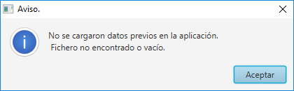
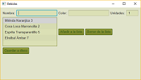
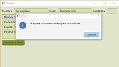
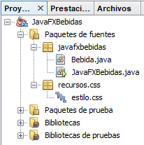

Inmobiliaria
Tarea online
Título de la tarea: Creando aplicaciones gráficas de escritorio.
Unidad: 09
Ciclo formativo y módulo: DAM/DAW, Programación.
Curso académico: 2018/19
¿Qué contenidos o resultados de aprendizaje trabajaremos?
Escribe programas que manipulen información seleccionando y utilizando tipos avanzados de datos.
1.- Descripción de la tarea
Caso práctico

Por fin, Juan y María están manos a la obra en la elaboración del aspecto visual de la aplicación que tienen entre manos.
María y Juan se encargarán de incorporar JavaFX al programa para dotar a su aplicación de una potente y vistosa interfaz gráfica, y de paso le irán enseñando a Ana cómo construir un interfaz gráfica desde el principio.
En esta ocasión, el proyecto que llevan entre manos es relativo a una tienda de refrescos, un cliente les ha encargado una pequeña aplicación para gestionarla su tienda, para llevar el stock de botellas que tiene, que hasta ahora la gestionaba con papel y lápiz, y estaba empezando a perder papeles y y oportunidades de negocio.
¿Qué te pedimos que hagas?
Las actividades a realizar se centrarán en la creación de una aplicación gráfica de escritorio para gestionar unas bebidas.
Actividad 1.- Crear la clase Bebida.
¿Qué debe incluir nuestra aplicación?
Se debe crear una clase Bebida con los atributos siguientes:
- nombre, de tipo
String. - color, de tipo
String. - unidades, de tipo
int.
Actividad 2.- Dotar de una interfaz gráfica a la pequeña aplicación de gestión de bebidas que tenemos que desarrollar.
Al ejecutar la aplicación, aparecerá un la interfaz como la que se muestra a continuación, con los campos necesarios para rellenar los datos necesarios, correspondientes a los atributos mencionados anteriormente y se empleará para recoger sus valores un control TextField.
- Lo primero que debe hacer al ejecutar la aplicación es intentar cargar desde fichero (por ejemplo
bebidas.dat) alArrayListdonde se almacenarán los datos serializados de las bebidas. Si no existe el fichero o está vacío, lógicamente elArrayListestará vacío, sin ningún elemento. Así pues, se avisará al usuario de que la aplicación no tiene datos grabados, mediante un mensaje como el siguiente:
- Si existe el fichero, se cargarán los datos guardados, de modo que las bebidas se alojarán en el
ArrayList, tal y como se puede ver en la imagen siguiente, donde teníamos grabadas ya algunas bebidas. En este caso, hemos usado unFlowPanecomo layout de distribución, aunque puedes usar otro si lo crees oportuno.
Actividad 3.- Añadir nueva bebida.
- Al dar de alta una nueva bebida, si no se rellenan todos los datos, entonces se debe mostrar una pantalla similar a la siguiente, donde puedes ver que se impide el alta del nuevo elemento.
- En el caso de que se escriba caracteres alfanuméricos en vez de números en el caso de las unidades, se avisará al respecto y no se permitirá por tanto dar de alta en ese caso:
Actividad 4.- Borrar bebida.
- Al seleccionar un elemento y pinchar en el botón de borrar de la lista:
-
se eliminará del
ArrayListy delListViewla bebida en cuestión:

Actividad 5.- Guardar en fichero serializado y recuperar del mismo.
- Cuando se pulse el botón de guardar, se grabará la lista un fichero de datos serializado.
- Cuando se ejecute la aplicación, se buscará ese fichero y se recuperarán los datos existentes cargándolos en la lista y en el
ListView.
Estructura del proyecto.
- La estructura del proyecto debería estar ordenada tal cual se observa en la imagen, con un paquete para las clases y una carpeta de recursos, donde albergaremos el fichero de estilos.

2.- Información de interés
Recursos necesarios y recomendaciones
Como recursos para la tarea:
- Computador personal.
- JDK y JRE de Java SE.
- Entorno de desarrollo NetBeans.
- Para la tarea, como habrás visto, se utiliza una hoja de estilo sencilla que adjuntamos a continuación para que la puedas incorporar a tu proyecto tras descomprimir el siguiente archivo:
Hoja de estilo (378 bytes)
Para saber más
Una vez realizada la tarea, el envío se realizará a través de la plataforma. Comprime la carpeta del proyecto NetBeans en un fichero .zip y nómbralo siguiendo las siguientes pautas:
Apellido1_Apellido2_Nombre_PROG_Tarea09
3.- Evaluación de la tarea
Criterios de evaluación implicados
- Se han escrito programas que utilicen arrays.
- Se han reconocido las librerías de clases relacionadascon tipos de datos avanzados.
- Se han utilizado listas para almacenar y procesar información.
- Se han utilizado iteradores para recorrer los elementos de las listas.
- Se han reconocido las características y ventajas de cada una de la colecciones de datos disponibles.
- Se ha comentado y documentado el código.
- Se han aplicado formatos en la visualización de la información.
- Se han utilizado ficheros para almacenar y recuperar información.
- Se han utilizado las herramientas del entorno de desarrollo para crear interfaces gráficos de usuario simples.
- Se han programado controladores de eventos.
- Se han escrito programas que utilicen interfaces gráficos para la entrada y salida de información.
¿Cómo valoramos y puntuamos tu tarea?
Como criterios de corrección:
- El seguimiento de las instrucciones de la tarea. Si en el enunciado se ha dicho que hay que implementar algo de una determinada forma, debe hacerse así .
- La apropiada captura y gestión de excepciones. Hay que evitar las situaciones que provoquen que la aplicación aborte, ya que todas las excepciones serán capturadas y tratadas convenientemente.
- La calidad de la implementación (uso de variables adecuadas; nombres descriptivos para variables, métodos y constantes; cumplimiento con el convenio sobre "asignación de nombres a identificadores" establecido para el lenguaje Java, comentarios apropiados, corrección ortográfica y gramatical; uso adecuado de la indentación; eficiencia, simplicidad y legibilidad del código; etc.).
- Cualquier funcionalidad pedida en el enunciado debe poderse probar y funcionar correctamente, de acuerdo a las especificaciones del enunciado.
- Se deben incluir comentarios en el código para que éste quede autodocumentado. Especialmente, se valorará que la documentación automática generada con
Javadocsea completa y correcta. - Los mensajes al usuario deben ser siempre claros, correctos ortográfica y gramaticalmente, y ofrecer al mismo toda la información que le resulte relevante de forma completa. Se tendrá especialmente en cuenta que los textos por pantalla tengan presente en todo momento que el usuario no está en el contexto del programador respecto al problema y a la solución, así que debemos preocuparnos de hacer explícito cuál es ese contexto. Por eso, debemos trabajar en la medida de lo posible asumiendo que el usuario no tiene por qué poseer conocimiento alguno sobre el problema, ni sobre la solución que aporta nuestra aplicación, salvo la información que le demos por medio de los mensajes.
- La corrección ortográfica y gramatical, así como la coherencia en las expresiones, tanto en los comentarios como en los mensajes al usuario.
- Es fundamental que el código esté correctamente indentado, se penalizará la no contemplación de este criterio.
- Correcta implementación y uso de los métodos para guardar y recuperar los datos de la aplicación en el fichero.
- Encapsulación de las clases: uso de las menores variables de clase, siendo locales siempre que se pueda, etc.
|
Rúbrica de la tarea | |
|---|---|
|
Se ha creado la clase Bebida con las características especificadas en el enunciado. |
1,5 puntos |
|
Se ha dotado de una interfaz gráfica a la aplicación empleando los controles JavaFX especificados en el enunciado. |
1,5 puntos |
|
Se ha implementado la funcionalidad para añadir. |
1,5 puntos |
|
Se ha implementado la funcionalidad para borrar. |
1,5 puntos |
|
Los datos de la aplicación se guardan y recuperan de forma correcta en un fichero serializado. |
1,5 puntos |
|
Se capturan las excepciones en los lugares apropiados, evitando que el programa aborte de manera abrupta. |
1,5 puntos |
Se han incluido los comentarios Javadoc apropiados y funcionan correctamente. |
1,00 punto |
Además de la puntuación anterior, si entregas la tarea dentro del plazo "oficial" de la unidad, es decir, hasta el día anterior a que se abra la siguiente unidad, tendrás además una bonificación del 10% de la calificación. Por ejemplo, si habías obtenido un 7'50, tendrás un aumento del 10% (0'75), quedándose tu nota en un 8'25. Eso sí, cualquier calificación que supere el 10 con este complemento, se seguirá quedando en un 10, pues ésta es la máxima calificación. Por tanto, cualquier calificación a partir de 9'10 se convertirá automáticamente e un 10 si se entrega antes del comienzo de la siguiente unidad. ¡Ánimo! ¡Y a ver si conseguís esas bonificaciones!
Anexo. Licencia de recursos
| Recurso | Datos del recurso |
|---|---|
| Todas las capturas de pantalla de esta tarea que no tienen la licencia al pie de la misma poseen la siguiente licencia: |
Autoría:José Javier Bermúdez Hernández. Licencia:Uso educativo-nc. Procedencia: Captura de pantalla de una aplicación desarrollada con el programa NetBeans, con licencia GPL2 |
Obra publicada con Licencia Creative Commons Reconocimiento No comercial Compartir igual 3.0